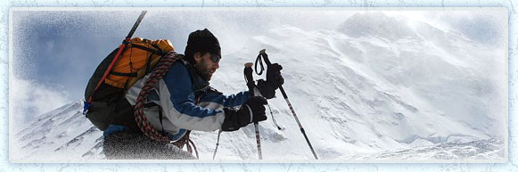
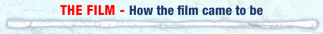

Set against the breathtaking backdrop of the Himalayas, Blindsight follows the gripping adventure of six Tibetan teenagers who set out to climb the 23,000 foot Lhakpa Ri on the north side of Mount Everest.
A dangerous journey soon becomes a seemingly impossible challenge made all the more
remarkable
by the fact that the teenagers are blind.
Believed by many Tibetans to be possessed by demons, the children are shunned by their parents, scorned by their villages and rejected by society. Rescued by Sabriye Tenberken - a blind educator and adventurer who established the first school for the blind in Lhasa, the students invite the famous blind mountain climber Erik Weihenmayer to visit their school after learning about his conquest of Everest. Erik arrives in Lhasa and inspires Sabriye and her students Kyila, Sonam Bhumtso, Tashi, Gyenshen, Dachung and Tenzin to let him lead them higher than they have ever been before.
The resulting 3-week journey is beyond anything any of them could have predicted.


The idea for the expedition came about after blind educator Sabriye Tenberken, who founded Braille Without Borders, the first and only school for the blind in Tibet, wrote the following email letter to the world renowned blind mountaineer Erik Weihenmayer, upon hearing the news that he had summitted Mt. Everest in 2001. Sabriye had read Erik’s book TOUCH THE TOP OF THE WORLD to the students in the school, and was inspired to get in touch following the incredible news of his summit.
The Letter that started the whole expedition and film :
This is a copy of the original letter written by Sabriye Tenberken to Erik Weihenmayer after he summitted Everest in 2001.
Dear Erik,
After you reached the top of the world our Tibetan neighbour rushed into our center and told the kids about your success. Some of them first didn’t believe it at first but then there was a mutual understanding: if you could climb to the top of the world, we also can overcome our borders and show to the world that the blind can equally participate in society and are able to accomplish great things.
Since my boyfriend Paul and I had read your book with great pleasure, I decided to tell the children about your life. Just one week ago I told the children in our center all about your childhood, how you became blind, how you dropped your canes from bridges, how you finally met other blind people and then how you became confident in wrestling. All of them were very impressed by all these experiences you had and they compared your experiences with their own ones. Again they realized that it does not matter much if you are a blind child in Germany, USA or Tibet, the experience one has who becomes blind, the embarrassment at first, the confidence which builds up slowly but steadily, the reaction of the sighted surrounding is probably for every blind person the same.
After I had told your story to the children, the boys were walking together with some of our sighted colleagues through the inner part of Lhasa. Lhasa is not the blind-friendliest city in the world. There are lots of holes in the street, which sometimes are a few meters deep. Construction sites are never protected through wires. It can happen that you step in huge puddles of dirty water or even excrements. Most of our children know their way through this chaos. I teach them mobility and they are quite confident in using their canes. They always think that if I could find my way around they also have to try. The only problem is that they are sometimes very embarrassed to show their canes since nomads and pilgrims who never saw a cane before often make fun about them. They call them “blind fools”, imitate them and laugh about them. One of the boys however once turned around and said: “you can not talk to me like that, I am blind but I am not a fool! And did you ever go to school, do you know how to read and write? Can you find the toilet in the middle of the night without a torch?”
Not all of these children have this pride and confidence to react in such a strong way. I often tell them, that they should understand that these people are just stupid. And if they can, they should say something back. Most of them now like the idea to defend themselves in a verbal way. First they try to reply in a rather friendly way and if this does not help, they are starting to shout back, make fun of them and soon they have the crowd on their side.
And still, if a sighted friend is around, they try to hide away their canes to walk invisible and convenient on the arm of the sighted.
And at this day when I ended your story by saying: “this man, who is blind like you climbed the top of the world, not by holding the arm of a sighted friend, but with the help of some strings and two canes”, They all proudly decided to walk on their own, Without the convenience of walking with the sighted. Stories like yours change their lives. Most of them now understand that there is nothing to be embarrassed about. They can be very proud little people, and they say quite often: “we are blind, so what? We can speak English and Chinese, we can find our way in the labyrinth of Lhasa’s walkways, we are able to read and write in three different Braille scripts and we read and write without using light.
Last week I told them already that I wanted to write to you to ask if you would like to come to Tibet, maybe even to do a small climbing workshop with our kids.
Two years ago, some of our students started with rock climbing, taught by Tibetan Everest guides from the Tibetan mountain climbing institute. After you have reached the Everest I talked to this climbing teacher about the idea inviting you to Lhasa. He became very interested and since then we were searching for your e-mail address.
In a way, we are something like colleagues, maybe in encouraging the blind to stand up and to find and overcome their own borders.
As I read from your book we have the same philosophy, similar history and a similar way of approaching ideas.
We all would be very excited if you could visit our project. Paul and I also want to come to the states in the beginning of the next year and maybe we have the chance to meet you somewhere there first.
Right now I am sitting in our computer room. Next to me is Gyenshen, a brilliant young student who became blind with the age of 9. He together with two other girls gets computer lessons and he also is writing a letter to you.
Gyenshen comes from a very remote and poor farmer area. After he became blind his family kept him away in a dark room for three years. The family was embarrassed having a blind child. In Tibet people believe that blindness is a punishment for something which the person has done bad or wrong in his/her previous life. People also believe that blind people are possessed by demons.
When he came to our project he was very shy. Now he is one of the best students and is quite confident with handling the computer. He is probably the only one of his village who knows that the world is round, and that one can communicate through just a wire. He is able to tell the other children of the village that “iron yaks” are Toyota Landcruisers which drink gasoline instead of water.
The blind that grow up in Tibet have certainly a totally different life than we in Germany or you in the US. But they feel a close solidarity with blind people from other countries. This connection and solidarity gives them a lot of strength and power to manage their lives.
Today is the international day of the white cane and you help us to fill this day with proud.
Greetings from a sunny and cold Lhasa, greetings from all the children, the staff and especially from Paul.
Say hello to your family.
With lots of good wishes, yours truly,
Sabriye Tenberken
The idea for the film came from Erik Weihenmayer the blind mountaineer and one of the main characters in the film. Erik was put in contact with movie producer Steven Haft who thought this story would likely resonate with film producer Sybil Robson-Orr because of her interest in Tibet and mountain climbing. (She met her husband Matthew climbing Kilimanjaro, the same mountain on which Erik got married.) It only took one meeting with Erik before she decided to make the film.
“Erik told me climbing mountains gave him confidence as a blind teenager and he wanted to share that experience with these blind Tibetan kids. He asked me if I thought taking 6 blind Tibetan teenagers up a 23,000 foot mountain in the Himalayas sounded like a movie. I told him it did and decided to make it,” says producer Robson-Orr. Sybil and Steven Haft had liked Lucy Walker’s ‘Devil’s Playground,’ the critically acclaimed documentary feature about Amish teenagers, and asked her if she’d be interested in directing this project. Lucy connected with the material personally, and thus the filmmaking unit was complete.
The title of the film came about because it was agreed that it was vital not to shy away from the word ‘blind,’ and also that the title needed a unique and unusual feel, to truly reflect the film. Says Sybil Robson-Orr, producer “The word was initially inspired by how blind people are literally blindsided by society in Tibet. Blindsided became ‘blindsighted,’ abbreviated to BLINDSIGHT which we thought was a new word. After conducting an initial title search, we discovered that blindsight is an actual medical phenomenon involving a cortex of the brain in which blind people have a sense of perceived vision.”
‘Blindsight’ – definition:
Visual processing in the brain goes through a series of processing stages. Destruction of the first visual cortical area, primary visual cortex (or V1 or striate cortex) leads to blindness in the part of the visual field that corresponds to the damaged cortical representation. The area of blindness - known as a scotoma - is in the visual field opposite the damaged hemisphere and can vary from a small area up to the entire hemifield.
Although individuals with damage to V1 are not consciously aware of stimuli presented in their blind field, Larry Weiskrantz and colleagues showed in the early 1970s that if forced to guess about whether a stimulus is present in their blind field, some observers do better than chance. This ability to detect stimuli that the observer is not conscious of can extend to discrimination of the type of stimulus (for example, whether an 'X' or 'O' has been presented in the blind field).
This general phenomenon has been dubbed blindsight.
It is unsurprising from a neurological viewpoint that damage to V1 leads to reports of blindness. Visual processing occurs in the brain in a hierarchical series of stages (with much crosstalk and feedback between areas). As V1 is the first cortical area in this hierarchy any damage to V1 severely limits visual information passing from retina, via the LGN and then V1, to higher cortical areas. However, the route from retina through V1 is not the only visual pathway into cortex (though it is by far the largest); it is commonly thought that the residual performance of people exhibiting blindsight is due to preserved pathways into extrastriate cortex that bypass V1. What is surprising is that activity in these extrastriate areas is apparently insufficient to support visual awareness in the absence of V1.
References
Danckert, J. & Rossetti, Y. (2005).
"Blindsight in action: what can the different sub-types of blindsight tell us about the control of visually guided actions?".
Neurosci Biobehav Rev 29 (7): 1035–1046.
Stoerig, P. & Cowey, A. (1997). "Blindsight in man and monkey". Brain 120: 535–559.
Weiskrantz, L (1986). Blindsight: A case study and its implications. Oxford, Oxford University Press.